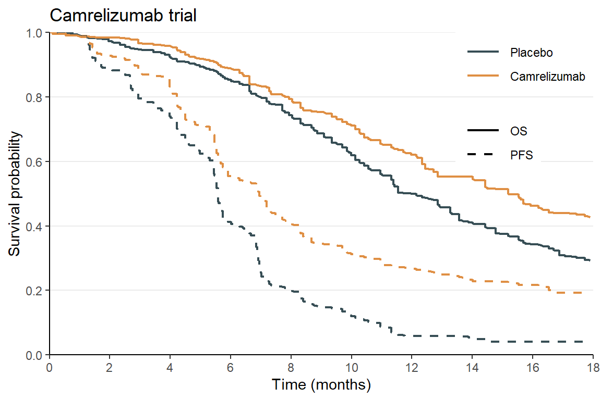
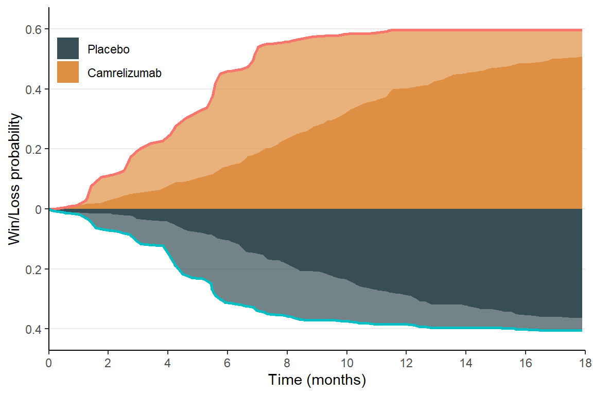

source("winkm_functions.R")
library(tidyverse) # for data manipulation and visualization
library(ggsci) # for color palettesCalculating win-loss statistics using summary data
Reconstruction based on published Kaplan-Meier curves of overall and event-free survival
WinKM provides a simple way to calculate win-loss statistics using summary data. This is useful when you have access to only published Kaplan-Meier (KM) curves of overall survival (OS) and nonfatal event-free survival time (EFS), but not the individual patient data, as is often the case in systematic reviews and meta-analyses.
- Presentation (5/30/2025)
Basic idea
The basic idea is to consider the win and loss proportions by a certain time as a functional of the joint distribution of OS and EFS. Since we only have the marginal distributions through the KM curves, we will need to infer their associations via additional summary data like total event counts and rates.
All in all, we need the following for each arm:
- KM estimates for OS and EFS (obtained by scanning and digitizing the curves using free online tools like WebPlotDigitizer; this typically involves putting dots, manually or automatically, on the curves and extracting their coordinates);
- At-risk table at selected time points (usually provided below the KM curves);
- Total event counts (reported in the CONSORT diagram or results section):
- Deaths (OS);
- EFS endpoints (first of death/nonfatal event);
- Nonfatal event.
An Example: a step-by-step guide
Installation
Download and compile the R functions from the winkm_functions.R script available at the GitHub repository.
Original study
Consider the ESCORT-1st trial (Luo et al. 2021, open-access) that compares the efficacy of camrelizumab (\(N=298\)) versus placebo (\(N=298\)) (both in combination with chemotherapy) in patients with advanced esophageal squamous cell carcinoma on the co-primary endpoints of
- Overall survival (OS);
- Progression free survival (PFS).
Scan the KM curves
The KM curves for OS and PFS are accessible in Figure 2 of the original publication. I scanned the graphs using WebPlotDigitizer and stored the digitized data in:
- camrelizumab_os.csv for OS;
- camrelizumab_pfs.csv for PFS.
Read and clean OS data:
# Reading (OS) from CSV, skipping first 2 lines, specifying col_names manually
# Data look like this:
# placebo_chemo camr_chemo
# X Y X Y
# 0.178704185 1 0.111817005 0.995059289
# 0.580821703 0.994071146 0.536244961 0.990118577
os_data <- readr::read_csv(
"data/Camrelizumab Luo 2021 - JAMA/camrelizumab_os.csv", # Replace with your path
skip = 2,
col_names = c("time_placebo", "surv_placebo",
"time_camr", "surv_camr")
# col_names must be in the format: "time_group", "surv_group"
)
# Pivot to long, labeling groups
os_long <- prepare_km_data(
km_data = os_data,
time_cols = c("time_placebo", "time_camr"),
surv_cols = c("surv_placebo", "surv_camr"),
ref = "placebo", # "group0" in "time_group0", "surv_group0"
group_labels = c("Placebo", "Camrelizumab") # First ref (ctr) and then trt
)Read and clean PFS data:
# Reading (PFS) from CSV, skipping first 2 lines, specifying col_names manually
# Data look like this:
# placebo_chemo camr_chemo
# X Y X Y
# 0.203515376 1.001333549 0.203515376 0.996069918
# 0.582249871 0.997326755 0.682098056 0.989870686
pfs_data <- readr::read_csv(
"data/Camrelizumab Luo 2021 - JAMA/camrelizumab_pfs.csv", # Replace with your path
skip = 2,
col_names = c("time_placebo", "surv_placebo",
"time_camr", "surv_camr")
)
# Pivot to long, labeling groups
pfs_long <- prepare_km_data(
km_data = pfs_data,
time_cols = c("time_placebo", "time_camr"),
surv_cols = c("surv_placebo", "surv_camr"),
ref = "placebo",
group_labels = c("Placebo", "Camrelizumab")
)Merge the OS and PFS data:
# Merge endpoints
df_km <- merge_endpoints(os_long, pfs_long)
# # A tibble: 398 × 4
# group time os pfs
# <fct> <dbl> <dbl> <dbl>
# 1 Placebo 0 1 1
# 2 Placebo 0.112 1 1.00
# Compute increments of survival/cumulative hazard functions
# in preparation for win-loss calculations
df_increments <- compute_increments(df_km)
# # A tibble: 398 × 9
# group time os pfs os_p dos pfs_p dpfs dLpfs
# <fct> <dbl> <dbl> <dbl> <dbl> <dbl> <dbl> <dbl> <dbl>
# 1 Placebo 0 1 1 1 0 1 0 0
# 2 Placebo 0.112 1 1.00 1 0 1 0 0
# 3 Placebo 0.179 1 1.00 1 0 1.00 0 0
# 4 Placebo 0.204 1.00 1.00 1 0.000366 1.00 0 0
# 5 Placebo 0.536 0.995 0.998 1.00 0.00491 1.00 0.00352 0.00352 Plot the digitized data and compare with the original KM curves of @Luo et al. (2021) (Figure 2):
Plot KM curves
# Plot the KM curves and compare with the published ones
df_km |>
ggplot(aes(x = time, y = os, color = group)) +
geom_step(aes(linetype = "OS"), linewidth = 0.8) +
geom_step(aes(y = pfs, linetype = "PFS"), linewidth = 0.8) +
theme_minimal() +
theme(legend.position = "bottom") +
scale_x_continuous(limits = c(0, 18), breaks = seq(0, 18, by = 2), expand = expansion(c(0,0))) +
scale_y_continuous(limits = c(0, 1), breaks = seq(0, 1, by = 0.2), expand = expansion(c(0,0))) +
scale_color_jama() + # use the JAMA color palette
scale_linetype_manual(NULL, values = 1:2) +
labs(
title = "Camrelizumab trial",
x = "Time (months)",
y = "Survival probability",
color = NULL
) +
theme_classic() +
theme(
panel.grid.major.y = element_line(),
legend.position = c(1, 1),
legend.justification = c(1, 1),
legend.key.width = unit(1, "cm")
)
Input the risk tables
The at-risk tables for OS and PFS in Figure 2 are manually entered in a csv file:
Read and the risk table and compute the total follow-up times:
# Read risk table, in the format:
# time_col, endpoint_col, group_cols (2)
# Actual data look like this:
# time endpoint camr_chemo placebo_chemo
# 0 os 298 298
# 2 os 294 289
# 4 os 285 275
risk_table <- readr::read_csv(
"data/Camrelizumab Luo 2021 - JAMA/risk_table.csv"
)
# Compute follow-up times
fl_times <- compute_followup(risk_table,
time_col = "time",
endpoint_col = "endpoint",
group_cols = c("placebo_chemo", "camr_chemo"),
group_labels = c("Placebo", "Camrelizumab")
)
# # A tibble: 4 × 3
# endpoint group total_followup
# <chr> <fct> <dbl>
# 1 os Placebo 2690
# 2 os Camrelizumab 2747
# 3 pfs Placebo 1528
# 4 pfs Camrelizumab 1919Input the total event counts
The total numbers of OS and PFS events are reported in the text of the paper; the total numbers of progressive disease are reported in the CONSORT diagram (Figure 1).
# Manually input event numbers
# trt: Camrelizumab
event_nums_camr <- c(
ND = 135, # Deaths
NP = 144, # Progression (141 radiographic + 3 clinical progression)
Ns = 199 # PFS endpoints
)
# ctr: Placebo
event_nums_plac <- c(
ND = 174, # Deaths
NP = 193, # Progression (189 radiographic + 4 clinical progression)
Ns = 229 # PFS endpoints
)Compute the association parameter \(\theta\) using follow-up lengths and event counts:
# Compute theta
theta <- compute_theta(
event_nums_trt = event_nums_camr,
event_nums_ctr = event_nums_plac,
fl_times = fl_times,
ref = "Placebo" # labelled reference group
)
# 1 - 1/theta is Kendall's tau
# theta_trt theta_ctr
# 0.4193222 0.5458616Calculate win-loss probabilities
Finally, we can calculate the win-loss statistics at functions of time:
# Win-loss probabilities calculated from all summary data
df_wl <- compute_win_loss(
df_inc = df_increments, # From KM estimates
event_nums_trt = event_nums_camr, # Total event counts
event_nums_ctr = event_nums_plac,
theta = theta, # Association parameter
ref = "Placebo" # Reference group
)
# # A tibble: 199 × 7
# time win_os loss_os win_pd loss_pd win loss
# <dbl> <dbl> <dbl> <dbl> <dbl> <dbl> <dbl>
# 1 0 0 0 0 0 0 0
# 2 0.112 0 0.00494 0 0 0 0.00494
# 3 0.179 0 0.00572 0 0.000779 0 0.00650
# 4 0.204 0.000364 0.00601 0 0.00106 0.000364 0.00707
# 5 0.536 0.00522 0.00986 0 0.00272 0.00522 0.0126 Here:
time: time points;win_os,loss_os: win and loss probabilities for OS;win_pd,loss_pd: win and loss probabilities for PFS (when OS is tied);win,loss: overall win and loss probabilities.
Display the results
First, plot the approximated win-loss probabilities over time:
Plot win-loss probabilities
df_wl |>
ggplot(aes(x = time)) +
geom_area(aes(y = win, fill = "Camrelizumab"), alpha = 0.7) +
geom_area(aes(y = win_os, fill = "Camrelizumab")) +
geom_area(aes(y = - loss, fill = "Placebo"), alpha = 0.7) +
geom_area(aes(y = - loss_os, fill = "Placebo")) +
geom_line(data = df_wl,
aes(y = win, color = "Camrelizumab"), linewidth = 1,
show.legend = FALSE) +
geom_line(data = df_wl,
aes(y = - loss, color = "Placebo"), linewidth = 1,
show.legend = FALSE) +
scale_y_continuous("Win/Loss probability", limits = c(-0.42, 0.62),
breaks = seq(-0.4, 0.6, by = 0.2),
labels = abs(seq(-0.4, 0.6, by = 0.2))) +
scale_x_continuous("Time (months)", limits = c(0, 18), expand = expansion(c(0,0)),
breaks = seq(0, 18, by = 2)) +
scale_fill_jama(limits = c("Placebo", "Camrelizumab")) +
theme_classic() +
theme(
legend.position = c(0, 1),
legend.justification = c(0, 1.35),
# legend.direction = "horizontal",
legend.title = element_blank(),
legend.background = element_rect(fill = "transparent"),
panel.grid.major.y = element_line()
)
- Darker color represents win/loss on OS; light color represents win/loss on PFS.
Next, we can summarize the win-loss statistics at selected time points:
Calculate win-loss statistics at selected time points
# Function to calculate win odds
win_odds <- function(win, loss) {
tie <- 1 - win - loss
(win + 0.5 * tie) / (loss + 0.5 * tie)
}
# Specify time points
t0 <- seq(6, 18, by = 3) # Selected months
# Compute win ratio at t0
stats <- tibble(
t0, # Time points
wl = map(t0, ~ df_wl |> # Get the win-loss stats at latest time point to t0
filter(time <= .x) |>
slice_tail(n = 1) |>
select(win_os, loss_os, win, loss)
)
) |>
unnest(wl) |>
mutate( # Compute win ratio, win odds, and net benefit
win_ratio_os = win_os / loss_os,
win_ratio = win / loss,
win_odds_os = win_odds(win_os, loss_os),
win_odds = win_odds(win, loss),
net_benefit_os = win_os - loss_os,
net_benefit = win - loss
) |>
select(
t0,
win_os, loss_os, win_ratio_os, win_odds_os, net_benefit_os,
win, loss, win_ratio, win_odds, net_benefit
)
# For table display
library(knitr)
# Print the table
stats |>
kable(format = "html", digits = 2, caption = "Win-loss statistics at selected time points",
col.names = c("Time (months)", "Win (OS)", "Loss (OS)", "WR (OS)", "WO (OS)", "NB (OS)", "Win", "Loss", "WR", "WO", "NB")
)| Time (months) | Win (OS) | Loss (OS) | WR (OS) | WO (OS) | NB (OS) | Win | Loss | WR | WO | NB |
|---|---|---|---|---|---|---|---|---|---|---|
| 6 | 0.14 | 0.10 | 1.36 | 1.08 | 0.04 | 0.46 | 0.31 | 1.46 | 1.34 | 0.14 |
| 9 | 0.27 | 0.21 | 1.32 | 1.14 | 0.07 | 0.57 | 0.37 | 1.55 | 1.51 | 0.20 |
| 12 | 0.40 | 0.29 | 1.40 | 1.26 | 0.11 | 0.60 | 0.38 | 1.55 | 1.54 | 0.21 |
| 15 | 0.47 | 0.33 | 1.41 | 1.31 | 0.14 | 0.60 | 0.40 | 1.51 | 1.50 | 0.20 |
| 18 | 0.51 | 0.36 | 1.39 | 1.33 | 0.14 | 0.60 | 0.40 | 1.48 | 1.48 | 0.19 |
- WR: Win ratio; WO: Win odds; NB: Net benefit.
Interestingly, the inverse of 18-month win ratio for OS is 1/1.39=0.72, which is close to the hazard ratio of 0.70 reported in the paper. This is expected when the PH assumption is true (Oakes 2016).
References
Luo, Huiyan, Jin Lu, Yuxian Bai, Teng Mao, Jun Wang, Qingxia Fan, Yiping Zhang, et al. 2021. “Effect of Camrelizumab Vs Placebo Added to Chemotherapy on Survival and Progression-Free Survival in Patients with Advanced or Metastatic Esophageal Squamous Cell Carcinoma: The ESCORT-1st Randomized Clinical Trial.” Jama 326 (10): 916–25.
Oakes, D. 2016. “On the Win-Ratio Statistic in Clinical Trials with Multiple Types of Event.” Biometrika 103 (3): 742–45.